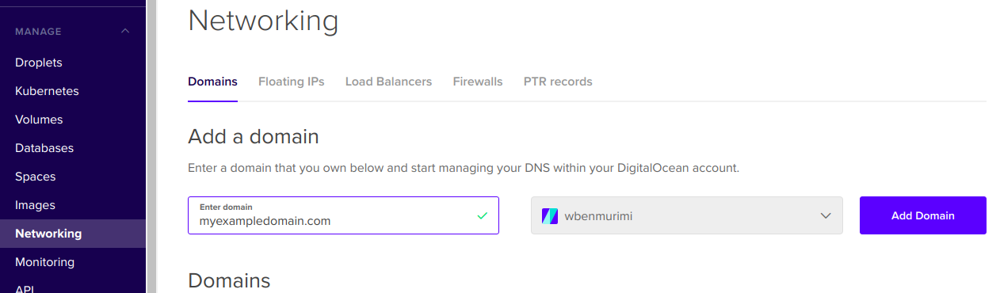
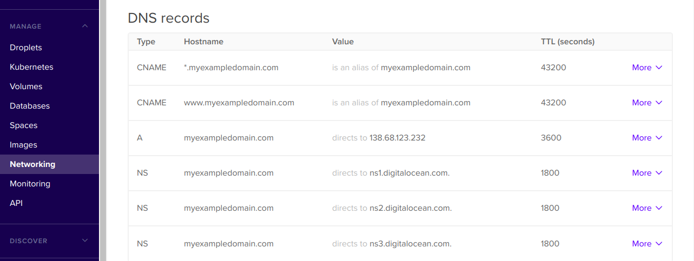
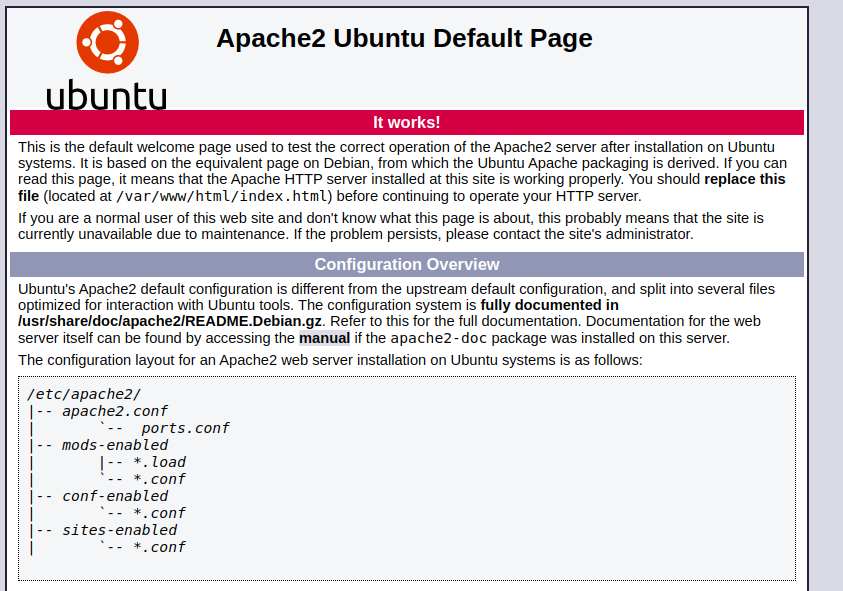
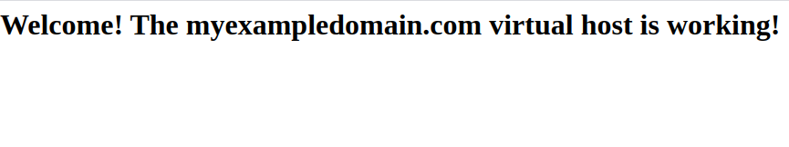

How To Host Your First Web Application [Apache2 & Ubuntu 18.04]
Have you developed a web application and you didn’t have an idea on how to host it? How about hosting multiple websites on the same server (virtual Machine)? In this blog I will take you through the process of setting up the server and running your first web application.
I will be using Digital Ocean because they provide cheap virtal machines (droplet) for only $5 per month.You can use my referral link for a $100 in credit over 60 days.
Prerequisites
- You have created a droplet or you have your own server ready and have access to the root account.
- You have basic understanding of Linux commands
- You have purchased a domain name
- You have installed various packages and modules to run your application (eg: PHP, Python, Nodejs etc). However for the purpose of demonstration we will use a simple html page in this tutorial.
Configuring Your Domain
Login to your domain hosting provider and configure the nameservers you want to use eg: Cloudfare or Digital Ocean nameservers. In this example I used digital ocean nameservers.
Set up DNS records as indicated in these screenshots from your digital ocean portal under MANAGE> Networking.

Complete configuration should be something similar to this.

Note the A record must point to the IP address of your droplet. It’s also a good practice to configure CNAME records that direct users that uses a different domain endpoint.
When you run ping myexampledomain.com on your terminal, you should see the IP address of your server
Setting Up Apache2
Create a non-root user with sudo privileges and use that account to run all the set-up commands.
Create a user account myuser [choose your own name]: adduser myuser
Add user to the sudo group: usermod -aG sudo myuser
Switch user account to the new user: sudo su myuser
Update the local repositories by running sudo apt update followed by installing Apache2 sudo apt install apache2
Run this command to check if Apache2 is running sudo systemctl status apache2. You should see an output similar to this
_● apache2.service - The Apache HTTP Server
Loaded: loaded (/lib/systemd/system/apache2.service; enabled; vendor preset: enabled)
Active: active (running) since Fri 2020-03-13 13:52:20 CAT; 2 days ago
Process: 1410 ExecStart=/usr/sbin/apachectl start (code=exited, status=0/SUCCESS)
Main PID: 1765 (apache2)
Tasks: 11 (limit: 4915)
Memory: 50.6M
CGroup: /system.slice/apache2.service
├─ 1765 /usr/sbin/apache2 -k start_
If you visit http://your_server_ip on your browser and you will see Apache2 default web page this means we can now proceed to setting up the virtual hosts.

Configuring Virtual Host
We are going to make use of virtual hosts so we can be able to configure and host more than one domain from a single server.
Apache serves documents from /var/www/html directory by default. You can chose to create a folder there and add your content but I prefer having it outside the html folder.
Create a directory to store the application files
sudo mkdir /var/www/myexampledomain.com
Change ownership of the folder to the current logged in user
sudo chown -R $USER:$USER /var/www/myexampledomain.com
Change the permission of the folder
sudo chmod -R 755 /var/www/myexampledomain.com
Create a placeholder index file to test the domain
nano /var/www/myexampledomain.com/index.html
Copy this text in the index.html file
<html>
<head>
<title>Web Hosting Tutorial</title>
</head>
<body>
<h1>Welcome! The myexampledomain.com virtual host is working!</h1>
</body>
</html>
Save and close the file (Ctr X)
The default virtual host configuration file is located at /etc/apache2/sites-available/000-default.conf , we will disable the default site (Default Apache welcome page in the previous step) by running sudo a2dissite 000-default.conf
Now create your virtualhost file
sudo nano /etc/apache2/sites-available/myexampledomain.com.conf
Inside add the configuration below then save and close.
<VirtualHost *:80>
#ServerAdmin: The email address of the admin
# ServerName: specifies what hostname must appear in the request's Host: header to match this virtual host.
#ServerAlias: A name that should match as a basename
#DocumentRoot: Directory containing the application files
ServerAdmin [email protected]
ServerName myexampledomain.com
ServerAlias www.myexampledomain.com
DocumentRoot /var/www/myexampledomain.com
#Custom error log files. Renaming them like this helps you identify errors ifyou have a probllem loading your web app.
ErrorLog ${APACHE_LOG_DIR}/myexampledomain_error.log
CustomLog ${APACHE_LOG_DIR}/myexampledomain_access.log combined
</VirtualHost>
Enable the file we just created with
sudo a2ensite myexampledomain.com.conf
After this command, a copy of your configuration file is created at /etc/apache2/sites-enabled/ .Apache reads the configuration files and links found in this directory when it starts or reloads.
Now test for configuration errors:
sudo apache2ctl configtest
The output should be Syntax OK
Restart Apache server for your changes to take effect:
sudo systemctl restart apache2
Now open http://myexampledomain.com on your browser. You should be able to see something like this:

After this you can now replace the index.html file with your application code.
The 3 easiest ways of uploading your content to the remote server will be:
- Pulling/ cloning from a remote git repository (highly recommended)
- Using an FTP client such as FileZilla, WinScp
- Running scp from your terminal/shell
In case the site is not loading as expected, check the logs at /var/log/apache2/myexampledomain_error.log and /var/log/apache2/myexampledomain_access.log
Thank you for following through this, I hope you found it useful.
Next we will configure SSL on this website.
Happy hosting :)
To make a comment you have to login
0 Comments